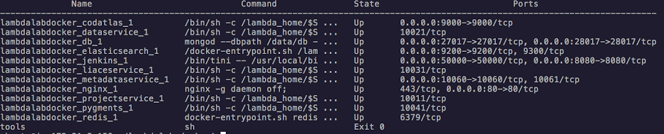
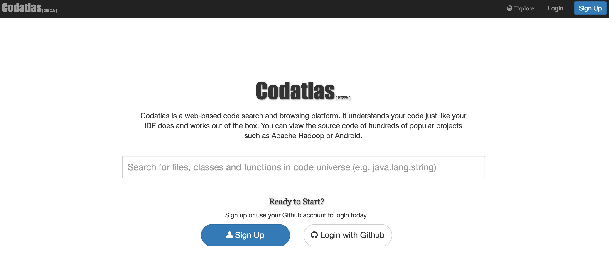

Codatlas Private Cloud Version Quick Install¶
Intro¶
This document is a step-by-step guide to install Codatlas on your private cloud server.
Please note that due to different internet environment in China, we have a slight different install process if you are using a machine within China. Please make sure to ignore the steps marked by (Outside of China) and instead follow the steps marked by (In China) to speed up the installation.
Prerequisites¶
In order to install Codatlas, make sure you have the following pre-requisites before you start:
A DockerHub account or a registry.lambdalab.io account (if you are in China)
An Ubuntu machine with root access. Note that port80(http) and port22(ssh) need to be opened.
The Ubuntu machine must fulfill the minimum system requirements:
- 8G RAM
- 50G Hard Drive (SSD preferred)
Install Docker and Docker Compose¶
(Outside of China) If you have installed Docker and Docker Compose, you can skip this step. Otherwise You need to install Docker and Docker Compose first.
curl -sSL https://get.docker.com/ | sh
sudo usermod -aG docker $USER
sudo sh -c 'curl -L https://github.com/docker/compose/releases/download/1.8.0/docker-compose-`uname -s`-`uname -m` > /usr/local/bin/docker-compose'
sudo chmod +x /usr/local/bin/docker-compose
(In China) If you are in China, instead you could do:
curl -sSL https://get.daocloud.io/docker | sh
sudo usermod -aG docker $USER
sudo sh -c 'curl -L https://get.daocloud.io/docker/compose/releases/download/1.8.0/docker-compose-`uname -s`-`uname -m` > /usr/local/bin/docker-compose'
sudo chmod +x /usr/local/bin/docker-compose
If this is first time you install Docker and Docker Compose, it is highly recommended to RESTART the machine before you continue:
sudo reboot
Authentication¶
(CentOS only) For some Linux version such as CentOS, Docker may not be automatically running after system reboot, in which case you may need to restart Docker process manually first to proceed:
sudo systemctl start docker
(Outside of China) To be able to pull the images, you need log into docker hub with your user name which is already authorized by lambdalab If you haven’t got authorized, please send an email to lambdalab@lambdalab.io.
docker login
(In China) If you are in China, please use our private registry for better speed.
First, you need to register an account at
https://registry.lambdalab.io
and ask lambdalab@lambdalab.io to authorize your account, then you need do
docker login registry.lambdalab.io
Clone Git Repo for Docker Compose¶
(Outside of China) To save unnecessary authentication, the docker compose file and our configuration files (in HOCON format) is release through public git repo:
git clone https://github.com/lambdalab/lambdalab-docker
(In China) If you are in China, please use our CSDN git repository:
git clone https://code.csdn.net/lambdalab/lambdalab-docker.git
The repo contains two sets of files: docker-compose.yml which is used to start the services. configs/*.conf files which
are consumed by our services inside the container (the configs directory is mounted into all the containers that run
our services)
You could customize the services by directly modify the files in the git repo and do rebase everytime we have a update.
All data generated by our services will be stored in data directory located in the same level with ‘docker-compose.yml’
and all logs generated by our services will be stored in logs directory.
Download Docker Image and Start Docker Services¶
Under the root of the git repo(lambdalab-docker), run the following script:
(In China) If you are in China, please use ./cn-lambda-compose instead of ./lambda-compose in all the following cases)
./lambda-compose up -d
This script will download or upgrade all necessary docker images and start all docker services, it could take a while for the first time. After the script is done, run the following command to verify the services:
./lambda-compose ps
You should see all the docker services lists similar to this:
Open a browser and try to access the public DNS of the server with http protocal. For example, if you are using AWS as your cloud service, this address may look like:
http://ec2-52-35-135-191.us-west-2.compute.amazonaws.com
verify that you can see Codatlas home page as showing below:
You are done with the setting up Codatlas if you are not using it with Github Integration. Please refer to User Guide for details on how to use it.
Configure Github Integration¶
This section is only necessary if you want to integrate Codatlas with Github, it’s highly recommended if you use Github as your code hosting service.
Log into your github account and go to Settings then OAuth applications then Developer applications tab.
Click on Register new application button and fill in Application name and Application description section with preferred text. Fill in Homepage URL and Authorization callback URL with public DNS of the server, e.g. http://ec2-52-35-135-191.us-west-2.compute.amazonaws.com. Click Register Application to create a new OAuth application. Note Client ID and Client Secret Github provided with the newly created application.
Go back to the bash terminal, open and edit the lambda-enterprise.conf file:
vi ./lambdalab-docker/configs/lambdalab-enterprise.conf
And change ClientId and ClientSecret fields of both github-private and github sections to be the Client ID and Client Secret of your github application you just created:
github-private {
authorizationUrl="https://github.com/login/oauth/authorize"
accessTokenUrl="https://github.com/login/oauth/access_token"
clientId=f261b8d12f1a8ac16f2a
clientSecret=989acad6e4df128ab8c2dc0ee3a5672a9e1ffe5a
scope="user:email,repo"
}
github {
authorizationUrl="https://github.com/login/oauth/authorize"
accessTokenUrl="https://github.com/login/oauth/access_token"
clientId=d1d8e43a14e1f3e1e2d8
clientSecret=ac383f2f378015a06d8d55ef340a029d4314ec0f
scope="user:email,public_repo"
}
After the change, restart Codatlas process:
./lambda-compose restart codatlas
Go back to your browser and go to Codatlas Home Page, click on Login button on the top right, and then click on Login with Github, make sure you can successfully login with your Github account.
You are done with integrate Codatlas with Github! Please refer to User Manual for details on how to use it.
Upgrade Codatlas¶
Upgrading Codatlas is made easy, fast and version-controlled as we manage update process with lambda-docker git repository. The first step of upgrade is save you local config change by ‘git commit’ or ‘git stash’ and the do:
git pull --rebase
on the docker compose git repo.
Then as mentioned before, if just docker-compose file is changed,
./lambda-compose up -d
could automatically restart the outdated services. However, when config files under configs directory changes, docker-compose up -d will not know who to update, therefore, whenever changes are made to the config files, it is more safe to do
./lambda-compose restart
to let tasks in containers run with new configs
Common Process Management with Docker Compose¶
docker-compose is a command line util to manage docker containers. It should be run under the folder where the docker-compose.yaml exists. We added a simple wrapper around it called lambda-compose to set all enviroment variables properly.
Common operations are as follows:
list process¶
./lambda-compose ps
start whole Codatlas enterprise stack¶
./lambda-compose up -d
which is equivalent to use
./lambda-compose -f docker-compose.yml up -d
start a particular services¶
./lambda-compose up -d $service
attach to a all containers’ output¶
./lambda-compose logs -f
attach to a container’s output¶
./lambda-compose logs -f $service
stop and then clean all the contains¶
./lambda-compose down
run command inside (similar to ssh)¶
./lambda-compose run $container /bin/bash
find help¶
There are also kill/restart/rm commands if needed. use
./lambda-compse help $command_name
to find more details.